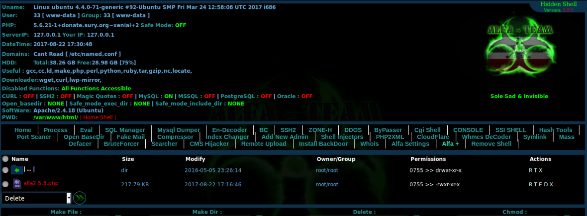
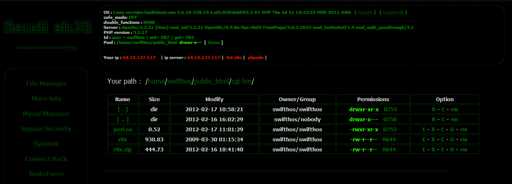

Shell, İnternet sitelerinde belirli yetkileri (okuma yazabilme ve silme vb.) almamızı sağlayan bir kod dizindir.Bu yetkiler ise bize arka planda çalışan kodlara erişim, içerideki mesaj trafiğini görüntüleyebilme gibi olanaklar sağlar. Eğer Shell atma işlemi bilmeyen birisi tarafından atılırsa veya kötü niyetli bir iş için kullanılacaksa ciddi zarar görülebilir.
Alfa php shell piyasanın efsane shelli olma yolunda hızla ilerliyor, solevisible shell olarakta bilinen ve iranlı hackerlerin yaptığı gerçekten çok profesyonel bir shell’dir, hatta belkide şuanda piyasanın en güncel en iyi shelli diyebilirim. Bu yeni sürümünde daha çok hatalar ve bozukluklar giderilmiş. python,cgi,perl,symlink,grabber gibi bölümleri çok işevsel çalışıyor. DownloadAlfa PHP Shell 3.0.1 indir // Alfa Shell download
Saudi Shell, Suudi Arabistan’lı hackerlar tarafından yazılmış, döneminin güçlü bir bypass shell scriptidir. Symlink, /etc/passwd okuma gibi çeşitli fonksiyonları pratikleştiren bu shell script, oldukça işlevseldir ve kullanımı da basittir. Bu php webshell scriptin kesinlikle arşivinizde bulunmasını tavsiye ediyoruz. Paylaştığımız scriptler sadece eğitim amaçlıdır ve kötü amaçlı kullanımlar bizim sorumluluğumuzda değildir. DownloadSaudi Priv Shell indir // Arap Shell download